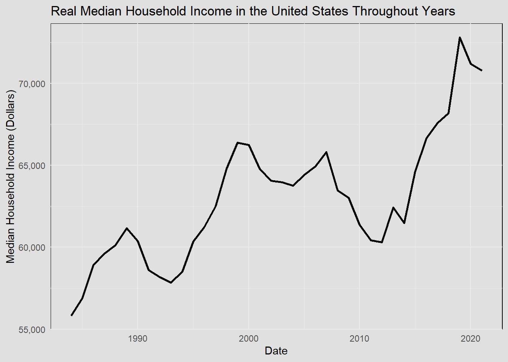

Data Sources
Data Gathering
Data Discription & Source
In this section, different datasets are gained to help provide different analysis in later sections. Each dataset serves to answer questions that are defined in introduction section. To be more specifc, there are datasets regarding the household savings, incomes, sale prices, Gini idex, and housing affordability which can help us analysis the impact of the income disparities and housing affordability throughout USA. The detialed description of each dataset is provided.
1. Household Savings
- Link: Household Saving Dataset
- Description: This dataset contains information related to household savings in the United States throughout the years from 1992 to 2021. It includes data information on the saving, which can be an important economic indicator for me to make analysis. The Units for dataset are Billions of Dollars, Not Seasonally Adjusted.
2. Real Median Household Income in the United States
- Link: Real Median Household Income Dataset
- Description: This dataset represents the real median household income dataset. This is an estimation of Median Incomes. The Census Bureau has computed medians using either Pareto interpolation or linear interpolation. Currently, we are using linear interpolation to estimate all medians. Pareto interpolation assumes a decreasing density of population within an income interval, whereas linear interpolation assumes a constant density of population within an income interval. The Census Bureau calculated estimates of median income and associated standard errors for 1979 through 1987 using Pareto interpolation if the estimate was larger than $20,000 for people or $40,000 for families and households. This is because the width of the income interval containing the estimate is greater than $2,500.

3. Median Sales Price of Houses Sold for the United States
- Link: Median Sales Price of Houses Dataset
- Description: This dataset contains information on the median sales price of houses sold in the United States. It can be a valuable indicator of the state of the real estate market.
- This dataset can provide me with a direct view about the sale price of the house in USA. We can see clearly about the price disparities. Then, by comparing with the income and saving, we can know about the patterns regarding the impact of disparities.
4. GINI Index for the United States
Link: GINI Index Dataset
Description: This dataset shows the Gini index for United States. Gini index measures the extent to which the distribution of income or consumption expenditure among individuals or households within an economy deviates from a perfectly equal distribution. In addition, a Gini index of 0 represents perfect equality, while an index of 100 implies perfect inequality.
Data are based on primary household survey data obtained from government statistical agencies and World Bank country departments.
World Bank collection of development indicators, compiled from officially recognized international sources. It presents the most current and accurate global development data available and includes national, regional, and global estimates. The World Bank labels these annual series, but several observations are missing..
Source Indicator: SI.POV.GINI
5. Housing Affordability Index
- Link: Housing Affordability Index Dataset
- Description: This dataset contains data on the Housing Affordability Index. The housing affordability index measures the degree to which a typical family can afford the monthly mortgage payments on a typical home. Value of 100 means that a family with the median income has exactly enough income to qualify for a mortgage on a median-priced home. An index above 100 signifies that family earning the median income has more than enough income to qualify for a mortgage loan on a median-priced home, assuming a 20 percent down payment. This index is calculated for fixed mortgages.
- This dataset can directly tell us if one can easily afford a house. This can help me make analysis the resources disparities and the possible reasons for the differences in housing affordability
6. Personal Saving Rate
- Link: Personal Saving Rate Dataset
- Description: This dataset is to provide information on the personal saving rate. The personal saving rate measures the percentage of disposable income that individuals save, which can be indicative of financial health. In here, personal saving as a percentage of disposable personal income (DPI), frequently referred to as “the personal saving rate,” is calculated as the ratio of personal saving to DPI.
- From this dataset, I can evaluate the overall changes throughout years regarding the personal savings. Then, by comparing with the income and house prices, we can see if there are any patterns or relationships.
7. Gross Domestic Product: Implicit Price Deflator
- Link: GDP: Implicit Price Deflator Dataset
- Description: This dataset represents the Gross Domestic Product (GDP) Implicit Price Deflator for USA, which is a measure of inflation in the economy and is used to adjust GDP for price changes.
- This dataset aims to cover the overall GDP changes quetsions that can be utilized to make analysis on the impact of the incomes and housing prices.
8. All Home Prices in States in the USA
- Link: Zillow Home Prices Dataset
- Description: This dataset provides information on home prices in various states in the United States. It is sourced from Zillow, a well-known real estate and rental marketplace.
- These housing datasets (from zillow group) not only provide sufficient information concerning the house values and sales prices, but also include the different regions. I wish to compare different states or regions to find if there are any patterns in house values, sales prices, and rental prices. I want to find correlations among them. In addition, some of the datasets cover a great range of time even from 2000 to 2023. This can provide with a broader view of the dataset when making visualizations across the time. We can see clearly how the housing values and sales prices changed throughout the years and make forecasts for the future.
A Screen shot for the dataset:
Reference:
- Codes: Rmd, Python & Qmd
- U.S. Bureau of Economic Analysis, Household saving [W398RC1A027NBEA], retrieved from FRED, Federal Reserve Bank of St. Louis; https://fred.stlouisfed.org/series/W398RC1A027NBEA, September 19, 2023.
- U.S. Census Bureau, Real Median Household Income in the United States [MEHOINUSA672N], retrieved from FRED, Federal Reserve Bank of St. Louis; https://fred.stlouisfed.org/series/MEHOINUSA672N, September 19, 2023.
- U.S. Census Bureau and U.S. Department of Housing and Urban Development, Median Sales Price of Houses Sold for the United States [MSPUS], retrieved from FRED, Federal Reserve Bank of St. Louis; https://fred.stlouisfed.org/series/MSPUS, September 19, 2023.
- World Bank, GINI Index for the United States [SIPOVGINIUSA], retrieved from FRED, Federal Reserve Bank of St. Louis; https://fred.stlouisfed.org/series/SIPOVGINIUSA, September 19, 2023.
- National Association of Realtors, Housing Affordability Index (Fixed) [FIXHAI], retrieved from FRED, Federal Reserve Bank of St. Louis; https://fred.stlouisfed.org/series/FIXHAI, September 19, 2023.
- U.S. Bureau of Economic Analysis, Personal Saving Rate [PSAVERT], retrieved from FRED, Federal Reserve Bank of St. Louis; https://fred.stlouisfed.org/series/PSAVERT, September 19, 2023.
- U.S. Bureau of Economic Analysis, Gross Domestic Product: Implicit Price Deflator [A191RI1Q225SBEA], retrieved from FRED, Federal Reserve Bank of St. Louis; https://fred.stlouisfed.org/series/A191RI1Q225SBEA, September 18, 2023.
- Zillow Group. Accessed April 19, 2023. “Zillow Research Data.” https://www.zillow.com/research/data/.